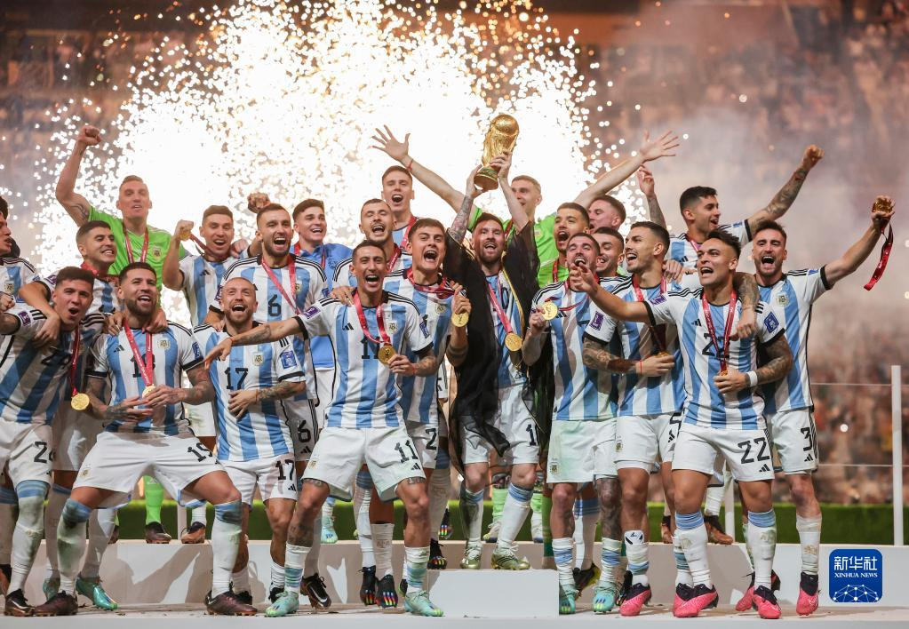

|
|
阿根廷国家男子足球队（Argentina national football team）的管理机构是阿根廷足球协会， 该队是世界上最成功的国家队之一，曾21次夺取过国家队重大赛事的冠军， 包括三次称雄世界杯（1978、1986、2022年）、15次夺得美洲杯、两次获得奥运男足金牌（2004、2008年）以及一次联合会杯。 2018俄罗斯世界杯阿根廷以D组第二名惊险晋级16强。 2018年6月30日，俄罗斯世界杯淘汰赛正式打响，阿根廷3-4不敌法国，无缘8强。 2021年，阿根廷国家队夺得美洲杯冠军。 2022卡塔尔世界杯，阿根廷以C组头名晋级，一路战胜澳大利亚、荷兰（点球）、克罗地亚挺进决赛。 2022年12月18日，世界杯决赛上阿根廷通过点球大战击败法国，赢得2022年卡塔尔世界杯冠军。
让热泪尽情流淌，让呐喊冲向夜空，让歌声响彻球场……
在多哈的夜空下，梅西用首开纪录的点球，门前霸气的补射，点球大战的稳定军心，无数次的妙传突破， 带领阿根廷队终于在卡塔尔世界杯打破宿命，击碎了总是与悲情相伴的“魔咒”，夺得冠军。
至此，1978年和1986年二度捧杯的阿根廷队，在等待36年后，终于在“潘帕斯雄鹰”战袍上绣上了第三颗星。 他们完成了仅次于“五星”巴西、“四星”德国和意大利的第三冠伟业，也捍卫了南美足球的尊严， 打破了欧洲球队对过去四届（2006-2018）世界杯冠军的垄断。
在卢赛尔体育场，在点球大战的胜利瞬间，阿根廷球员拥抱在一起，跪倒在地，尽情哭泣。 梅西曾经的偶像艾马尔，从教练席奔向场内，汇入“蓝白海洋”。 巴蒂斯图塔、贝隆、里克尔梅等一代代有才华、有个性的球星们， 在品尝过无数次《阿根廷，别为我哭泣》的悲情后，终于等到“阿根廷是冠军”的这一天。 在马拉多纳去世后的第一届世界杯，当看台上少了阿根廷最伟大球星的身影， 主帅斯卡洛尼麾下的球队，向永远活在他们心中的英雄，用冠军奖杯送上最崇高的敬意。
梅西“重生”：圆梦美洲杯 神似马拉多纳
自1993年赢得美洲杯冠军后，阿根廷队遭遇28年的“冠军荒”，多次在大赛决赛上冲冠失败。 其中令梅西和全队痛彻心扉的有三次——2014年世界杯决赛不敌德国队，2015和2016连续两届美洲杯决赛输给智利队。
身心俱疲、心灰意冷的梅西，一度考虑退出国家队，但几个月后又改变了决定。这是他辉煌生涯中展现的一个品质——从不放弃。
一次次跌倒爬起，终迎冠军时刻。2021年7月，在世界杯决赛输给德国队的马拉卡纳球场，阿根廷队1:0击败巴西队，夺得美洲杯冠军。 终场哨响，梅西跪倒在地，在18岁就披上成年国家队战袍的他，终于赢得了在成年国家队的第一冠。
“我认为梅西在卡塔尔如此出色的一个原因是，他已为阿根廷队赢得了美洲杯，这似乎减轻了他背上的重担。”英格兰足球名宿莱因克尔说。
他说，梅西的才华不仅体现在进球和助攻，以及能在对手三四人包夹中突围，还因为他在场上的视野、意识和决策，以及不断重复着别人难以完成的技术动作。
“他一拿球，整个球场都屏住了呼吸。球迷们情不自禁站起来，等待他的魔法，而他总是不让大家失望。”莱因克尔说。
梅西不是马拉多纳，但通过岁月积累，在冲击冠军失败后的一次次爬起，35岁的梅西已经有点神似于那位阿根廷传奇。
在与荷兰队的八强战中，梅西因与对方球员的摩擦，罕见发火。对此，阿根廷前主力后卫萨巴莱塔说：“愤怒的梅西是我们喜欢看到的。”
“这让我想起了马拉多纳，他的那种性格。当你努力去赢得世界杯时，这并不是一件坏事。”他说。
斯卡洛尼：团队精神 攻守平衡
2018年世界杯完败法国队、止步16强后，斯卡洛尼以临时主教练身份上任，随后转正。虽不被外界看好，但低调务实的他，一点点重铸球队凝聚力。
在2021年赢得美洲杯冠军后，斯卡洛尼赢得更多信任，球队更为团结。中场大将德保罗曾说：“早上十点，假如斯卡洛尼说‘晚安’，那对我们而言就是晚上。”
出征多哈，斯卡洛尼的教练团队中既有昔日天才中场艾马尔，还有曾经的顶级中卫萨穆埃尔，预示这是一支倡导攻守平衡的球队。
但通向卢赛尔之路，并不平坦。
首战1:2输给沙特阿拉伯队，让阿根廷球迷痛哭流涕，不少人甚至认为他们将无法小组出线。但在此之后，“潘帕斯雄鹰”却展开双翼，以非凡的仰角冲向“天王山”。
2:0击败墨西哥队稳住阵脚，2:0完胜波兰队昂首出线，2:1淘汰澳大利亚队进入八强，与荷兰队鏖战120分钟后点球大战获胜挺进半决赛，兵不血刃3:0完胜克罗地亚队——“开门黑”之后的阿根廷队表现得越来越好。
梅西说，首战遭受“沉重一击”后，全队是把每一场都当决赛去拼，“输球在让大家成长”。这意味着抗压能力提升、能够直面“逆风球”的阿根廷人，已有足够准备，在决赛上向卫冕冠军发起强有力的冲击。
18日决赛之夜，两球领先被法国队追平，再度领先又被扳平，以3:3进入点球大战的阿根廷队，如愿捧杯。的确，只有经受了足够的曲折和考验，才能体现冠军的含金量。梅西和他的球队用令人信服的胜利，写下队史辉煌的一页。